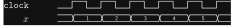
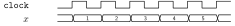

Streams#
As described in Overview, a stream is an inherently sequential collection. Each element in a stream is provided at a different clock cycle. It is not possible to read a stream out of order (skipping elements, rewinding, etc.).
Parts of a Stream#
Sirop streams have two parts: a “physical prefix” and a “logical part.” To see why, consider the following timing diagram:




What logical data does this stream carry? There is more than one possible interpretation:
If there is no latency, the data we care about is
[1, 2, 3, 4, 5, ...].If the latency is 1 clock cycle, the data we care about is
[2, 3, 4, 5, ...]. The preceding values ([..., 1]) should be ignored.If the latency is 2 clock cycles, the data we care about is
[3, 4, 5, ...]. The preceding values ([..., 1, 2]) should be ignored.etc.
In Sirop, these interpretations are expressed as follows:
0-cycle latency:
[]s ++ [1, 2, 3, 4, 5]s(or, more commonly, just[1, 2, 3, 4, 5]s)1-cycle latency:
[1]s ++ [2, 3, 4, 5]s2-cycle latency:
[1, 2]s ++ [3, 4, 5]setc.
The part before the ++ is the “physical prefix.”
We will see these outputs if we observe a design running on a physical FPGA, but they are not part of the logical output we care about.
The part after the ++ is the “logical part.”
Controlling the Physical Prefix#
Why even write down the physical prefix if we don’t care about it?
The answer is that, in some cases, we care about some properties of the physical prefix.
For example, we might want the generated VHDL entity to produce a valid output bit.
In the physical prefix, the valid bit must always be false.
In the logical part, the valid bit may be true or false.
const N: u32 = 4
// Return the square of the given u8.
// The output valid bit will be set to false in case of overflow.
accelerator[no_handshake] square = (s: Stm[(u8, bool), N]) =>
s
.StmMap(
@(data, valid) => (data*data, valid && data < 16),
/*head*/ (undefined:u8, false)
)
assert {
s = [(undefined:u8, false)]s ++ [
(2:u8, true), // OK
(3:u8, true), // OK
(4:u8, true), // OK
(16:u8, true) // Will overflow!
]s
}
yields [
( 4:u8, true),
( 9:u8, true),
(16:u8, true),
( 0:u8 /*ignored*/, false)
]s
// The "ignoring" clause specifies a bit mask to ignore parts of the output.
// 1 means ignore.
ignoring [
zeros:[(u8, bool)](),
zeros:[(u8, bool)](),
zeros:[(u8, bool)](),
(ones:[u8](), false)
]s
// All elements of the physical prefix must satisfy this predicate.
with prefix @(_, valid) => valid == false
Many of the built-in functions listed provide some way of controlling the physical prefix.
For instance, as shown in the sample code above, StmMap has a head parameter to set the initial value of the output register.
In the REPL, the physical prefix is hidden by default.
If it’s important to see the physical prefix, enable it by setting the special variable __show_prefix.
> __handshake = false
> [0:u8]s ++ [1:u8, 2:u8, 3:u8]s
[1:u8, 2:u8, 3:u8]s
> __show_prefix = true
> [0:u8]s ++ [1:u8, 2:u8, 3:u8]s
[0:u8]s ++ [1:u8, 2:u8, 3:u8]s
Stream Flattening#
The Sirop compiler flattens nested streams. (There is only one time dimension, after all.) For example:
> type [[1:u8, 2:u8, 3:u8]s, [4:u8, 5:u8, 6:u8]s]s
Stm[Stm[u8, 3], 2]
> [[1:u8, 2:u8, 3:u8]s, [4:u8, 5:u8, 6:u8]s]s
[1:u8, 2:u8, 3:u8, 4:u8, 5:u8, 6:u8]s
Flattening happens after type checking.
Therefore, if downstream functions require a flat stream, you should use StmJoin to explicitly flatten.
> __handshake = false
> __show_prefix = true
>
> // Taking the first row of a nested stream
> type [[1:u8, 2:u8, 3:u8]s, [4:u8, 5:u8, 6:u8]s]s
Stm[Stm[u8, 3], 2]
> type [[1:u8, 2:u8, 3:u8]s, [4:u8, 5:u8, 6:u8]s]s.StmTake(1)
Stm[Stm[u8, 3], 1]
> [[1:u8, 2:u8, 3:u8]s, [4:u8, 5:u8, 6:u8]s]s.StmTake(1)
[undefined:u8]s ++ [1:u8, 2:u8, 3:u8]s
>
> // Taking the first element of a flat stream (different result!)
> type [[1:u8, 2:u8, 3:u8]s, [4:u8, 5:u8, 6:u8]s]s.StmJoin()
Stm[u8, 6]
> type [[1:u8, 2:u8, 3:u8]s, [4:u8, 5:u8, 6:u8]s]s.StmJoin().StmTake(1)
Stm[u8, 1]
> [[1:u8, 2:u8, 3:u8]s, [4:u8, 5:u8, 6:u8]s]s.StmJoin().StmTake(1)
[undefined:u8]s ++ [1:u8]s
>
> // Some functions only work on flat streams
> [[1:u8, 2:u8, 3:u8]s, [4:u8, 5:u8, 6:u8]s]s.StmSum()
TypeError: Input to StmSum has type Stm[Stm[u8, 3], 2]. Expected a stream of integers.
> [[1:u8, 2:u8, 3:u8]s, [4:u8, 5:u8, 6:u8]s]s.StmJoin().StmSum()
[0:u8, 1:u8, 3:u8, 6:u8, 10:u8, 15:u8]s ++ [21:u8]s
Built-In Stream Functions#
The following stream operators are provided as part of the Sirop language.
Creating Streams#
- StmCst(n: I, k: T): Stm[T, n], where I is an unsigned integer type#
Creates a stream of length
nwhose elements are all the constantk.> __handshake = false > __show_prefix = true > StmCst(3, (42:u8, true)) [(42:u8, true)]s ++ [(42:u8, true), (42:u8, true), (42:u8, true)]s
- StmCount(n: I, init: J = 0, delta: J = 1): Stm[J, n], where I is an unsigned integer type and J is any integer type#
Creates a stream of
nintegers starting atinitand increasing bydelta.> __handshake = false > __show_prefix = true > StmCount(5:u3) [undefined:u3]s ++ [0:u3, 1:u3, 2:u3, 3:u3, 4:u3]s > StmCount(4, 42:u32) [undefined:u32]s ++ [42:u32, 43:u32, 44:u32, 45:u32]s > StmCount(3, -9:i8, -2:i8) [undefined:i8]s ++ [-9:i8, -11:i8, -13:i8]s
- StmCount2D(n: I, m: J): Stm[Stm[(I, J), m], n], where I and J are unsigned integer types#
Creates a nested stream such that the element at “row”
iand “column”jis(i, j). The types ofiandjare the same as the lengthsnandm, respectively.> __handshake = false > __show_prefix = true > StmCount2D(3:u8, 4:u16) [ undefined:(u8, u16) ]s ++ [ (0:u8, 0:u16), (0:u8, 1:u16), (0:u8, 2:u16), (0:u8, 3:u16), (1:u8, 0:u16), (1:u8, 1:u16), (1:u8, 2:u16), (1:u8, 3:u16), (2:u8, 0:u16), (2:u8, 1:u16), (2:u8, 2:u16), (2:u8, 3:u16) ]s
Note
The REPL prints a 1-dimensional stream due to stream flattening.
Transforming Streams Elementwise#
- StmMap(s: Stm[A, n], f: A -> B, head: B = undefined): Stm[B, n]#
Applies function
felementwise to streams.> __handshake = false > __show_prefix = true > ([0:u8]s ++ [1:u8, 2:u8, 3:u8, 4:u8]s).StmMap(x => x + 5) [undefined:u8, 5:u8]s ++ [6:u8, 7:u8, 8:u8, 9:u8]s > ([0:u8]s ++ [1:u8, 2:u8, 3:u8, 4:u8]s).StmMap(x => x + 5, 42:u8) [42:u8, 5:u8]s ++ [6:u8, 7:u8, 8:u8, 9:u8]s
See also
StmMap2, for simultaneous transformation over two streams
Combining Multiple Streams#
- StmConcat(s1: Stm[T, n], s2: Stm[T, m], head: T = undefined): Stm[T, n+m]#
Concatenates two streams.
> __handshake = false > __show_prefix = true > StmConcat([0:u8]s ++ [1:u8, 2:u8, 3:u8]s, [9:u8]s ++ [8:u8, 7:u8]s) [undefined:u8, 0:u8]s ++ [1:u8, 2:u8, 3:u8, 8:u8, 7:u8]s > StmConcat([0:u8]s ++ [1:u8, 2:u8, 3:u8]s, [9:u8]s ++ [8:u8, 7:u8]s, 42:u8) [42:u8, 0:u8]s ++ [1:u8, 2:u8, 3:u8, 8:u8, 7:u8]s
- StmZip(s1: Stm[A, n], s2: Stm[B, n], head: (A, B) = undefined): Stm[(A, B), n]#
Pairs up the elements of two streams.
> __handshake = false > __show_prefix = true > > u = [0:u6]s ++ [1:u6, 2:u6, 3:u6]s > v = [-1:i8]s ++ [-9:i8, -8:i8, -7:i8]s > StmZip(u, v) [undefined:(u6, i8), (0:u6, -1:i8)]s ++ [(1:u6, -9:i8), (2:u6, -8:i8), (3:u6, -7:i8)]s > StmZip(u, v, (42:u6, 43:i8)) [(42:u6, 43:i8), (0:u6, -1:i8)]s ++ [(1:u6, -9:i8), (2:u6, -8:i8), (3:u6, -7:i8)]s
See also
StmMap2, which zips two streams with an arbitrary function.
- StmMap2(s1: Stm[A, n], s2: Stm[B, n], f: A -> B -> C, head: C = undefined): Stm[C, n]#
Like
StmMap, but for two streams at once.> __handshake = false > __show_prefix = true > u = [0:u8]s ++ [1:u8, 2:u8, 3:u8, 4:u8]s > v = [-1:i16]s ++ [-9:i16, -8:i16, -7:i16, -6:i16]s > StmMap2(u, v, x => y => (x, y, x*y)) [ undefined:(u8, i16, i16), (0:u8, -1:i16, 0:i16) ]s ++ [ (1:u8, -9:i16, -9:i16), (2:u8, -8:i16, -16:i16), (3:u8, -7:i16, -21:i16), (4:u8, -6:i16, -24:i16) ]s > StmMap2(u, v, x => y => (x, y, x*y), (0:u8, 0:i16, 0:i16)) [ (0:u8, 0:i16, 0:i16), (0:u8, -1:i16, 0:i16) ]s ++ [ (1:u8, -9:i16, -9:i16), (2:u8, -8:i16, -16:i16), (3:u8, -7:i16, -21:i16), (4:u8, -6:i16, -24:i16) ]s
See also
StmZip, the special case wherefis simplyx => y => (x, y)
Sliding Windows#
- StmSlide(s: Stm[T, n], w: I, head: T = undefined): Stm[Vec[T, w], n-w+1], where I is an unsigned integer type#
Produces a stream of sliding windows over stream
s. Each window has sizew.> __handshake = false > __show_prefix = true > ([42:u8]s ++ [1:u8, 2:u8, 3:u8, 4:u8, 5:u8]s).StmSlide(3) [ undefined:Vec[u8, 3], [undefined:u8, undefined:u8, 42:u8]v, [undefined:u8, 42:u8, 1:u8]v, [42:u8, 1:u8, 2:u8]v ]s ++ [ [1:u8, 2:u8, 3:u8]v, [2:u8, 3:u8, 4:u8]v, [3:u8, 4:u8, 5:u8]v ]s > ([42:u8]s ++ [1:u8, 2:u8, 3:u8, 4:u8, 5:u8]s).StmSlide(3, 0:u8) [ [0:u8, 0:u8, 0:u8]v, [0:u8, 0:u8, 42:u8]v, [0:u8, 42:u8, 1:u8]v, [42:u8, 1:u8, 2:u8]v ]s ++ [ [1:u8, 2:u8, 3:u8]v, [2:u8, 3:u8, 4:u8]v, [3:u8, 4:u8, 5:u8]v ]s
Aggregation#
- StmAll(s: Stm[bool, n]): Stm[bool, 1]#
Returns
trueif all elements in the logical part of streamsaretrue.> __handshake = false > __show_prefix = false > ([false]s ++ [true, true, true]s).StmAll() [true]s > ([false]s ++ [true, true, false]s).StmAll() [false]s > ([false]s ++ [true, false, true]s).StmAll() [false]s > ([false]s ++ [false, true, true]s).StmAll() [false]s > ([false]s ++ [false, false, false]s).StmAll() [false]s
When applied to an empty stream,
StmAllreturnstrue.> __handshake = false > ([]s:Stm[bool,0]).StmAll() [true]s
See also
StmFold, for aggregation with an arbitrary function.
- StmAny(s: Stm[bool, n]): Stm[bool, 1]#
Returns
trueif any elements in the logical part of streamsaretrue.> __handshake = false > __show_prefix = false > ([true]s ++ [false, false, false]s).StmAny() [false]s > ([true]s ++ [false, false, true]s).StmAny() [true]s > ([true]s ++ [false, true, false]s).StmAny() [true]s > ([true]s ++ [true, false, false]s).StmAny() [true]s > ([true]s ++ [true, true, true]s).StmAny() [true]s
When applied to an empty stream,
StmAnyreturnsfalse.> __handshake = false > ([]s:Stm[bool,0]).StmAny() [false]s
See also
StmFold, for aggregation with an arbitrary function.
- StmSum(s: Stm[I, n]): Stm[I, 1], where I is an integer type#
Returns the sum of the elements in the logical part of stream
s.> __handshake = false > __show_prefix = false > ([undefined:u8]s ++ [1:u8, 2:u8, 3:u8, 4:u8]s).StmSum() [10:u8]s > ([undefined:i16]s ++ [-9:i16, -8:i16, -7:i16]s).StmSum() [-24:i16]s
When applied to an empty stream,
StmSumreturns 0.> ([]s:Stm[u2,0]).StmSum() [0:u2]s
Warning
Beware of overflow <https://en.wikipedia.org/wiki/Integer_overflow>! The sum is performed with the same type as the inputs.
> __handshake = false > __show_prefix = false > [255:u8, 1:u8]s.StmSum() [0:u8]s > [255:u8, 1:u8]s.StmMap(x => pad9(x)).StmSum() [256:u9]s
See also
StmFold, for aggregation with an arbitrary function.
- StmFold(s: Stm[A, n], z: B, f: (B, A) -> B): Stm[B, 1]#
Combines the elements in the logical part of stream
sto a single element using functionfand initial valuez.For example, for a 3-element stream
[x1, x2, x3]s, the result will be[ f(f(f(z, x1), x2), x3) ]s> __handshake = false > __show_prefix = false > ([5:i8]s ++ [1:i8, 2:i8, 8:i8]s).StmFold(9:i8, @(x, y) => x - y) // 9-1-2-8 [-2:i8]s > ([5:u16]s ++ [2:u16, 0:u16, 2:u16, 6:u16]s).StmFold(0:u16, @(x, y) => 10*x + y) [2026:u16]s
Unlike with
StmReduce, the input stream can be empty.> __handshake = false > __show_prefix = false > ([]s:Stm[u8,0]).StmFold(42:u8, @(x, y) => x + y) [42:u8]s
- StmReduce(s: Stm[T, n], f: (T, T)): Stm[T, 1]#
Combines the elements in the logical part of stream
sto a single element using functionf.For example, for a 3-element stream
[x1, x2, x3]s, the result will be[ f(f(x1, x2), x3) ]s> __handshake = false > __show_prefix = false > ([0:u8]s ++ [4:u8, 9:u8, 1:u8, 3:u8]s).StmReduce(@(x, y) => min(x, y)) [1:u8]s > ([0:u8]s ++ [4:u8, 9:u8, 1:u8, 3:u8]s).StmReduce(@(x, y) => max(x, y)) [9:u8]s > ([0:i8]s ++ [4:i8, 9:i8, 1:i8, 3:i8]s).StmReduce(@(x, y) => x - y) [-9:i8]s
Warning
The input stream must be non-empty.
> __handshake = false > __show_prefix = true > ([]s:Stm[u8,0]).StmReduce(@(x, y) => x + y) [undefined:u8]s
See also
StmFold, for aggregation of possibly empty streams with a given initial value
Nested Streams#
- StmJoin(s: Stm[Stm[T, m], n]): Stm[T, n*m]#
Removes the outermost level of nesting from the given stream.
> __handshake = false > __show_prefix = true > > type [[1:u8, 2:u8, 3:u8]s, [4:u8, 5:u8, 6:u8]s]s Stm[Stm[u8, 3], 2] > type [[1:u8, 2:u8, 3:u8]s, [4:u8, 5:u8, 6:u8]s]s.StmJoin() Stm[u8, 6] > [[1:u8, 2:u8, 3:u8]s, [4:u8, 5:u8, 6:u8]s]s.StmJoin() [1:u8, 2:u8, 3:u8, 4:u8, 5:u8, 6:u8]s > > // Not convinced anything is going on? > // We can observe the difference using StmTake. > // Taking the first row (before flattening): > type [[1:u8, 2:u8, 3:u8]s, [4:u8, 5:u8, 6:u8]s]s Stm[Stm[u8, 3], 2] > type [[1:u8, 2:u8, 3:u8]s, [4:u8, 5:u8, 6:u8]s]s.StmTake(1) Stm[Stm[u8, 3], 1] > [[1:u8, 2:u8, 3:u8]s, [4:u8, 5:u8, 6:u8]s]s.StmTake(1) [undefined:u8]s ++ [1:u8, 2:u8, 3:u8]s > // Taking the first element (after flattening): > type [[1:u8, 2:u8, 3:u8]s, [4:u8, 5:u8, 6:u8]s]s.StmJoin() Stm[u8, 6] > type [[1:u8, 2:u8, 3:u8]s, [4:u8, 5:u8, 6:u8]s]s.StmJoin().StmTake(1) Stm[u8, 1] > [[1:u8, 2:u8, 3:u8]s, [4:u8, 5:u8, 6:u8]s]s.StmJoin().StmTake(1) [undefined:u8]s ++ [1:u8]s > > // What about 3 dimensions? > type [[[1:u8, 2:u8]s, [3:u8, 4:u8]s]s, [[5:u8, 6:u8]s, [7:u8, 8:u8]s]s]s Stm[Stm[Stm[u8, 2], 2], 2] > type [[[1:u8, 2:u8]s, [3:u8, 4:u8]s]s, [[5:u8, 6:u8]s, [7:u8, 8:u8]s]s]s.StmJoin() Stm[Stm[u8, 2], 4] > type [[[1:u8, 2:u8]s, [3:u8, 4:u8]s]s, [[5:u8, 6:u8]s, [7:u8, 8:u8]s]s]s.StmJoin().StmJoin() Stm[u8, 8]
Note
The REPL prints 1-dimensional streams in each case due to stream flattening.
See also
StmSplit, for converting a flat stream back to a nested stream
- StmSplit(s: Stm[T, n], m: I): Stm[Stm[T, m], n/m], where I is an integer type#
Increases the level of nesting in the given stream.
> __handshake = false > __show_prefix = false > > type [1:u8, 2:u8, 3:u8, 4:u8, 5:u8, 6:u8]s Stm[u8, 6] > type [1:u8, 2:u8, 3:u8, 4:u8, 5:u8, 6:u8]s.StmSplit(2) Stm[Stm[u8, 2], 3] > type [1:u8, 2:u8, 3:u8, 4:u8, 5:u8, 6:u8]s.StmSplit(3) Stm[Stm[u8, 3], 2] > [1:u8, 2:u8, 3:u8, 4:u8, 5:u8, 6:u8]s.StmSplit(3) [1:u8, 2:u8, 3:u8, 4:u8, 5:u8, 6:u8]s > > // Not convinced anything is going on? > // We can observe the difference using StmTake. > // Taking the first element (before splitting): > type [1:u8, 2:u8, 3:u8, 4:u8, 5:u8, 6:u8]s Stm[u8, 6] > type [1:u8, 2:u8, 3:u8, 4:u8, 5:u8, 6:u8]s.StmTake(1) Stm[u8, 1] > [1:u8, 2:u8, 3:u8, 4:u8, 5:u8, 6:u8]s.StmTake(1) [1:u8]s > // Taking the first row (after splitting): > type [1:u8, 2:u8, 3:u8, 4:u8, 5:u8, 6:u8]s.StmSplit(3) Stm[Stm[u8, 3], 2] > type [1:u8, 2:u8, 3:u8, 4:u8, 5:u8, 6:u8]s.StmSplit(3).StmTake(1) Stm[Stm[u8, 3], 1] > [1:u8, 2:u8, 3:u8, 4:u8, 5:u8, 6:u8]s.StmSplit(3).StmTake(1) [1:u8, 2:u8, 3:u8]s > > // What about three dimensions? > type [1:u8, 2:u8, 3:u8, 4:u8, 5:u8, 6:u8, 7:u8, 8:u8]s Stm[u8, 8] > type [1:u8, 2:u8, 3:u8, 4:u8, 5:u8, 6:u8, 7:u8, 8:u8]s.StmSplit(2).StmSplit(2) Stm[Stm[Stm[u8, 2], 2], 2]
Note
The REPL prints 1-dimensional streams in each case due to stream flattening.
Warning
If
mdoes not dividen, the output stream will be shorter than the input stream.> __handshake = false > __show_prefix = true > > type [1:u8, 2:u8, 3:u8, 4:u8, 5:u8, 6:u8, 7:u8]s.StmSplit(2) Stm[Stm[u8, 2], 3] > [1:u8, 2:u8, 3:u8, 4:u8, 5:u8, 6:u8, 7:u8]s.StmSplit(2) [undefined:u8]s ++ [1:u8, 2:u8, 3:u8, 4:u8, 5:u8, 6:u8]s
See also
StmJoin, for converting a nested stream back to a flat stream
Discarding Parts of a Stream#
- StmDrop(s: Stm[T, n], k: I): Stm[T, n-k], where I is an integer type#
Discards
kelements from the logical part of streams.> __handshake = false > __show_prefix = true > ([0:u8]s ++ [1:u8, 2:u8, 3:u8, 4:u8]s).StmDrop(2) [undefined:u8, 0:u8, 1:u8, 2:u8]s ++ [3:u8, 4:u8]s > ([0:u8]s ++ [1:u8, 2:u8, 3:u8, 4:u8]s).StmDrop(1) [undefined:u8, 0:u8, 1:u8]s ++ [2:u8, 3:u8, 4:u8]s > ([0:u8]s ++ [1:u8, 2:u8, 3:u8, 4:u8]s).StmDrop(0) [undefined:u8, 0:u8]s ++ [1:u8, 2:u8, 3:u8, 4:u8]s > ([0:u8]s ++ [1:u8, 2:u8, 3:u8, 4:u8]s).StmDrop(4) [undefined:u8, 0:u8, 1:u8, 2:u8, 3:u8, 4:u8]s ++ []s
Warning
It is an error to drop more than the available number of elements.
> __handshake = false > __show_prefix = true > ([0:u8]s ++ [1:u8, 2:u8, 3:u8, 4:u8]s).StmDrop(5) EvalError: length in StmDrop evaluated to undefined:u4 > 4:u4 - 5:u4 // Output length is 4:u4 - 5:u4, which is undefined undefined:u4
See also
StmTake, for discarding elements from the end of a stream
- StmTake(s: Stm[T, n], k: I): Stm[T, k], where I is an integer type#
Changes the length of stream
stok.> __handshake = false > __show_prefix = true > > ([0:u8]s ++ [1:u8, 2:u8, 3:u8, 4:u8]s).StmTake(2) [undefined:u8, 0:u8]s ++ [1:u8, 2:u8]s > ([0:u8]s ++ [1:u8, 2:u8, 3:u8, 4:u8]s).StmTake(3) [undefined:u8, 0:u8]s ++ [1:u8, 2:u8, 3:u8]s > ([0:u8]s ++ [1:u8, 2:u8, 3:u8, 4:u8]s).StmTake(4) [undefined:u8, 0:u8]s ++ [1:u8, 2:u8, 3:u8, 4:u8]s
Warning
If
kis greater thann, the extra elements will be undefined.> __handshake = false > __show_prefix = true > > ([0:u8]s ++ [1:u8, 2:u8, 3:u8, 4:u8]s).StmTake(5) [undefined:u8, 0:u8]s ++ [1:u8, 2:u8, 3:u8, 4:u8, undefined:u8]s > > // Taking 4 elements from a stream of length 2 (!!!) > [1:u8, 2:u8, 3:u8, 4:u8, 5:u8]s.StmTake(2).StmTake(4) [undefined:u8, undefined:u8]s ++ [1:u8, 2:u8, undefined:u8, undefined:u8]s > // Just taking 4 directly would have been fine > [1:u8, 2:u8, 3:u8, 4:u8, 5:u8]s.StmTake(4) [undefined:u8]s ++ [1:u8, 2:u8, 3:u8, 4:u8]s
See also
StmDrop, for discarding elements from the beginning of a stream
Using Dedicated DSP Blocks#
FPGAs generally have dedicated digital signal processing (DSP) blocks to perform multiplication and accumulation. The following stream operators are helpful for taking advantage of this functionality, especially the “systolic mode” on Agilex FPGAs (e.g., https://docs.altera.com/r/docs/683037/24.3.1/agilextm-7-variable-precision-dsp-blocks-user-guide/agilextm-7-variable-precision-dsp-blocks-overview).
- StmMapDot(s1: Stm[Vec[I, m], n], s2: Stm[Vec[J, m], n], delay: K): Stm[u44, n], where I, J, and K are unsigned integer types#
- StmMapDot(s1: Stm[Vec[I, m], n], s2: Stm[Vec[J, m], n], delay: K): Stm[i44, n], where I and J are integer types, and K is an unsigned integer type
Computes the dot product of each vector in
s1with the corresponding vector ins2. This is defined so that the generated VHDL uses the DSPs in systolic mode.delayis the number of internal registers to enable in the DSPs; increasing this number will increase latency and increase the maximum clock frequency.> __handshake = false > __show_prefix = true > > u = [[ 1:i16, 2:i16, 3:i16]v, [4:i16, 5:i16, 6:i16]v]s > v = [[-1:i16, 2:i16, 3:i16]v, [4:i16, -2:i16, 4:i16]v]s > // dot([1, 2, 3], [-1, 2, 3]) = 12 > // dot([4, 5, 6], [4, -2, 4]) = 30 > StmMapDot(u, v, 0) [ undefined:i44, undefined:i44, undefined:i44, undefined:i44, undefined:i44, undefined:i44, undefined:i44 ]s ++ [ 12:i44, 30:i44 ]s > StmMapDot(u, v, 1) [ undefined:i44, undefined:i44, undefined:i44, undefined:i44, undefined:i44, undefined:i44, undefined:i44, undefined:i44 ]s ++ [ 12:i44, 30:i44 ]s
- StmMapDotCascaded(s1: Stm[Vec[I, m], n], s2: Stm[Vec[J, m], n], delay: K): Stm[u44, n], where I and J are unsigned integer types, K is any integer type#
- StmMapDotCascaded(s1: Stm[Vec[I, m], n], s2: Stm[Vec[J, m], n], delay: K): Stm[u44, n], where I, J, and K are integer types
Like
StmMapDot, but the input should be cascaded (like the output fromStmCascade). In other words,StmMapDotis equivalent toStmCascadefollowed byStmMapDotCascaded.In systolic mode, each input to the DSP chain must be delayed by one cycle relative to the previous input.
StmMapDotCascadedbehaves the same way.StmMapDotis more user-friendly, butStmMapDotCascadedgives you more control in case you want to create the input cascade withoutStmCascade.
- StmCascade(s: Stm[Vec[T, m], n]): Stm[Vec[T, m], n]#
Delays each element of the vector by 1 cycle relative to the previous element.
> __handshake = false > __show_prefix = true > > [[1:u8, 2:u8, 3:u8]v, [4:u8, 5:u8, 6:u8]v, [7:u8, 8:u8, 9:u8]v]s.StmCascade() [ undefined:Vec[u8, 3], undefined:Vec[u8, 3] ]s ++ [ /* Values manually aligned for legibility */ [ 1:u8, undefined:u8, undefined:u8]v, [ 4:u8, 2:u8, undefined:u8]v, [ 7:u8, 5:u8, 3:u8]v, [undefined:u8, 8:u8, 6:u8]v, [undefined:u8, undefined:u8, 9:u8]v ]s